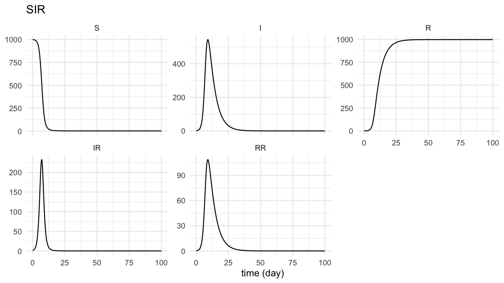

A tidy grammar for system dynamics modelling in R.
Specify a stock-and-flow model as three independent layers, and simulate it with one verb.
sd_structure() what exists, how it is wired (no math)
sd_equations() functional forms (symbolic)
sd_parameters() the numbers and data
simulate(structure, equations, parameters, spec = sim_spec())
-> binds, validates, integrates, returns one long tibbleThere is no compile step. Binding and validation happen inside simulate(); the “model” is just the three layer objects.
Installation
# install.packages("remotes")
remotes::install_github("rayhanalirachman/tidySD")tidysd::simulate() deliberately masks stats::simulate() – the grammar’s one verb takes the three layers, not a fitted model. sd_simulate() is an identical, non-masking alias if you would rather not shadow it.
A model in three layers
library(tidysd)
sir_struct <- sd_structure(
meta(name = "SIR"),
stock("S", units = "people", non_negative = TRUE),
stock("I", units = "people", non_negative = TRUE),
stock("R", units = "people", non_negative = TRUE),
aux("beta", units = "1/(people*day)"),
aux("lambda", units = "1/day"),
flow("IR", from = "S", to = "I", units = "people/day"),
flow("RR", from = "I", to = "R", units = "people/day")
)
sir_eqns <- sd_equations(
beta ~ contact_rate * infectivity / total_population,
lambda ~ beta * I,
IR ~ S * lambda,
RR ~ I / recovery_time
)
sir_pars <- sd_parameters(
constant(contact_rate = 6, infectivity = 0.20,
total_population = 1000, recovery_time = 5),
initial(S = 999, I = 1, R = 0)
)
spec <- sim_spec(start = 0, stop = 100, dt = 0.125,
method = "euler", time_unit = "day")
out <- simulate(sir_struct, sir_eqns, sir_pars, spec = spec)
out
#> # SIR
#> # A tibble: 5,607 x 5
#> time variable value unit type
#> <dbl> <chr> <dbl> <chr> <chr>
#> 1 0 S 999 people stock
#> 2 0.125 S 999. people stock
#> 3 0.25 S 999. people stock
#> 4 0.375 S 998. people stock
#> 5 0.5 S 998. people stock
#> 6 0.625 S 998. people stock
#> 7 0.75 S 998. people stock
#> 8 0.875 S 997. people stock
#> 9 1 S 997. people stock
#> 10 1.12 S 997. people stock
#> # i 5,597 more rowsOutput is one long tibble, so plotting comes free:
autoplot(out)
plot of chunk sir-plot
Because the layers are independent, swapping the transmission form touches the equations and nothing else:
sir_dd <- update(sir_eqns, lambda ~ contact_rate * infectivity * I)Design principles
- Readable — a model reads as a specification, not a build script.
- Layered — swap or reuse any one layer without touching the others.
-
Tidy output — one long-format tibble per run;
ggplot2methods come free. - No hidden state — layers are immutable; a variant is a new object.
-
Diagrams from the model —
sd_diagram()reads the wiring out of the model rather than asking you to draw it. -
Domain vocabulary —
stock(),flow(),aux(); never matrix builders. - Order-independent — equations resolve to a dependency graph at run time.
What each layer holds
| Item | Structure | Equations | Parameters |
|---|---|---|---|
| Stock / flow / aux / lookup / input exists; its units | x | ||
Flow from / to wiring |
x | ||
| Flow-rate and auxiliary formulas | x | ||
| Choice of functional form | x | ||
Derived initial-value form (init(S) ~ pop - I0) |
x | ||
| Constant and stock-initial values | x | ||
| Lookup point data; input series / driver function | x | ||
dt, method, start, stop
|
- sim_spec() - |
Built-ins on an equation right-hand side
Delays and smoothing — delayN(), smoothN(), the pipeline delay delay_fixed(), and forecast(). Shaping functions step(), pulse(), ramp(). Also previous(), t, dt, and base-R maths (ifelse, min, max, sqrt, sin, exp, log, %*%, sum, …).
Scenarios, data and calibration
# many runs, one call
simulate(struct, eqns, pars, spec = spec,
scenarios = scenarios(base = list(),
aggressive = list(fraction_reinvested = 0.14)))
# an exogenous driver read from a data frame
sd_parameters(input_series("emissions", data = global_emissions, interp = "linear"))
# observed data carried through to the output, tagged source = "observed"
simulate(struct, eqns, pars, spec = spec, observed = cases, map = c(I = "count"))
# least-squares estimation of free constants
calibrate(struct, eqns, pars, spec = spec, observed = cases,
target = c(I = "count"), free = c("beta", "infectious_period"),
lower = c(beta = 0, infectious_period = 1),
upper = c(beta = 0.01, infectious_period = 5))The catalogue
Twenty-two worked models ship with the package, each exercising a different corner of the grammar. Run any of them by number or name:
sd_example_ids()
#> # A tibble: 23 x 2
#> number name
#> <int> <chr>
#> 1 1 customer_growth
#> 2 2 s_shaped_growth
#> 3 3 overshoot
#> 4 4 solow
#> 5 5 sir
#> 6 6 bass
#> 7 7 cohort_sir
#> 8 8 material_delay
#> 9 9 teacup
#> 10 10 lotka_volterra
#> # i 13 more rows
out <- sd_example_run("lotka_volterra")They cover exponential and logistic growth, overshoot and collapse, Solow growth, SIR (aggregate, cohort-subscripted and fitted to real data), Bass diffusion, material and pipeline delays, information smoothing at every order, trend forecasting, a workforce aging chain, manufacturing defects, an atmospheric carbon bathtub driven from a data series, the Roessler attractor, a pendulum, sales-agent motivation and the capability trap.
Every one of them is verified in the test suite against an independently hand-coded integration of the original model.
Prior art
seminr – the layered constructor-DSL this design follows – and deSolve, the raw ODE substrate. Nearby in spirit: sdbuildR (pipe-chain builder), readsdr (XMILE import), PySD and BPTK-Py in Python, StockFlow.jl in Julia, sfcr for stock-flow-consistent macro models, and XMILE, the interchange standard behind every GUI tool.
Acknowledgements
The catalogue models are reimplementations of published teaching models: Jim Duggan’s SDMR (MIT (c) 2016 Jim Duggan), the SDXorg/test-models conformance corpus, and the SDXorg/PySD-Cookbook samples ((c) 2014-2022 James Houghton and Eneko Martin-Martinez). Only the equations are reproduced, as reference; the tidysd versions are rewritten in this grammar.